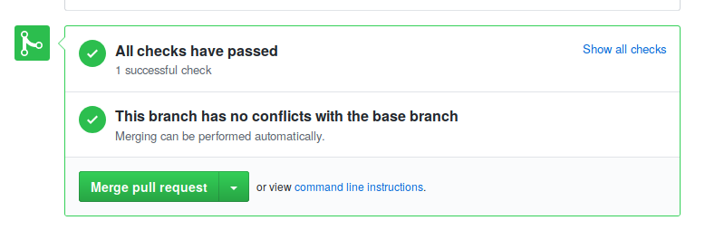
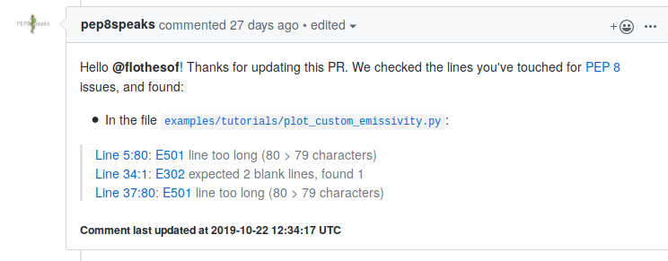

Contribute to tofu¶
You found a bug, or you want to add something to the library? This tutorial will show you how to get the repository and the first steps to contribute to the project.
Bug reports and suggestions¶
If you found a bug in tofu, or if you have a suggestion, the best is to open an issue directly on our github page. If you are opening an issue related to a bug found, please specify the version of the librairies (tofu, python, etc.) you are using, any configuration information that might be helpful to us (OS, server, how you installed tofu), a minimal example to recreate the bug (if possible), and the log files or errors you might have got.
Developping in the code¶
The basic tools¶
There are many tools and concepts to get familiar with when contributing to an open-source python library. A good place to get started is the scikit-project. And here is a list of tools you should get familiar with:
Python: the main language of tofuIPython: powerful interactive shell for python, and check this tutorialgit, and the feature branch workflowgithub: follow and watch our projectA text editor:
emacs,vim,sublime, or whichever you want
We will use Miniconda (light version of Anaconda, but you can also work with Anaconda or another python package manager of your choice) not only to install and manage the packages necessary for installing ToFu, but also to have a working bash-like Terminal.
Follow the directions (you can use default options)
We are going to create an environment specific for ToFu.
$ conda create -n tofu3 python scipy numpy cython git ipython
$ conda activate tofu3
This creates a conda environment named “tofu3” and installs scipy, numpy, git, ipython and cython. The second command activates this environment.
Create a ssh public key and add it to your GitHub account: follow this tutorial.
Go to ToFu’s GitHub repository: here.
Click on “clone or download” and swith to the option “Use SSH”. Copy the link.
Move to where you would like to install ToFu
$ cd some_path$ git clone git@github.com:ToFuProject/tofu.git(make sure you remember the path where you are installing, if you want to install it into your home repository, just make sure tocd ~before thegit clone...)Move to the tofu directory, probably:
cd ~/tofuSwitch to the
gitbranch you will be working on. If you are just starting you probably want to start from the latest develop branch:git checkout devel. If you are not familiar with git take a look at this tutorial (long) or this short oneCompile
python setup.py build_ext --inplaceMake sure tests are running
pytest tofu/tests
Where to start?¶
If you wish to contribute, but don’t know where to start, check our open issues. You can also read this tutorial, on how to contribute to a github project.
Git branches and pull requests¶
Before modifying the code, you should create a new branch (based on the devel branch) and switch to it.
git checkout -b <theNameOfYourBranch> # probably IssueNumber eg. Issue123
# change the source code
git add <files you changed>
git commit -m "[a tag] a message that explains what you changed"
git push -u origin <theNameOfYourBranch>
Now you can open a pull request in our github
page, from your branch,
theNameOfYourBranch to devel. We will review it, comment it, and
accept it.
Continuous integration¶
For each pull request (PR) on github, there will be a series of tests run to make sure the modifications introduced to the library did not introduce any errors. If all tests pass, you should see something like the image below.
If there is an error (red cross instead of green check) it can be either that your code is breaking the normal functionning of the code, or (less probably) that there is a bug in the unit tests. Please try and understand what went wrong. If you cannot find the problem, you can ask for help by commenting on the PR. Additionally to the unit tests, we have integrated pep8speaks, a bot that will check your coding style.
